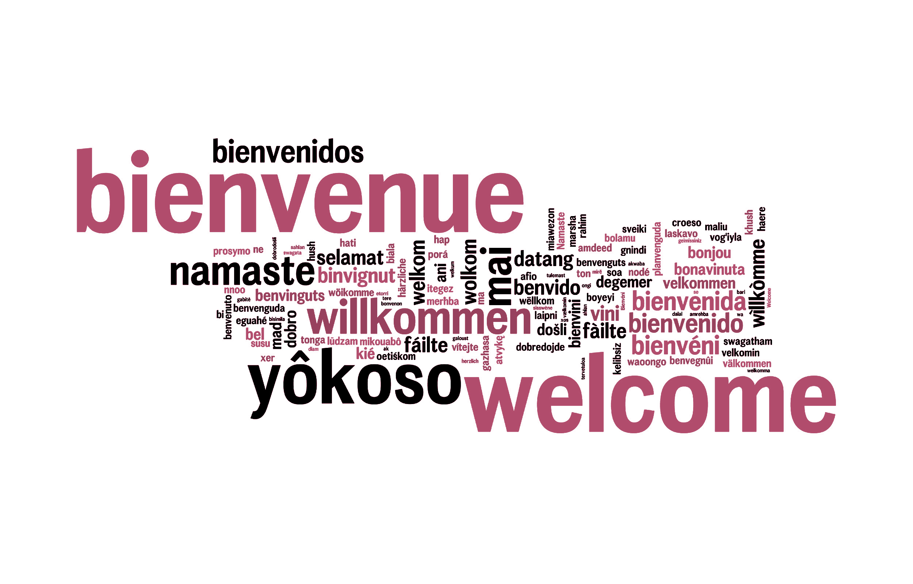
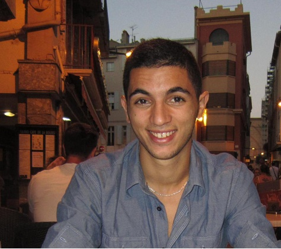
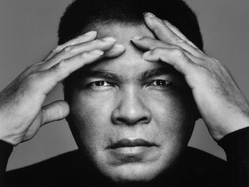
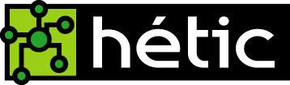

Bienvenue à tous
 Je vous présente ici, le parcours scolaire, et extra-scolaire, ainsi que les travaux que j'ai pu réaliser tout au long de l'apprentissage. Un espace est destiné a me contacter pour tout eventuel correction, mais aussi des commentaires permettant d'avancer mais aussi d'améliorer les erreurs ainsi que la mise en forme pour donner toute sa qualité à notre site web.
Yacine OUKAOUR
Né le 11/01/1993
Avant propos
Une petite anecdôte:
Car pour arriver au point de sortir un site web avec toutes ses performances, mais aussi avec une qualité visuelle remarquable c'est que derrière tous cela, il y a un travail acharné. Une petite phrase m'a interpellée lorsque je faisais mes recherches, et j'aimerais la partager avec vous, elle a put me donner le sourire pendant une période où je ramer beacoup. "On considère que les neuf dixièmes du code correspondent à environ 90% du temps de développement. Les 10% restant correspondent également à 90% du temps de développement"
"Plus le combat est dur, plus la victoire est belle." N'oublions pas que les erreurs nous freinent, mais nous arretes jamais.
Parcours scolaire
-

Baccalauréat général en série Economie et Social avec une moyenne de 14.5 et une mention Bien. Un collège/lycée acueillant des étudiant de multiples nationalités car seul lycée français en Algérie. Un passage par le Lycée International Alexanndre Dumas m'a permit une ouverture d'esprit, mais aussi ouvert de nombreuses expériences, par exemple le voyage dans les pays des élèves étranger, et ainsi pouvoir manipuler 4langues (français, arabe(littéraire écrit / parlé), anglais,kabyle).Ce qui permet d'avoir une vision sur l'avenir, car ce lycée permet a ces élèves de garder contacte, des élèves qui potentiellement constituent l'avenir de l'Algérie.
-
Section Economie Gestion, L1. Une formation où j'ai pu aprofondir certaines bases déja acquéri en section économie au lycée. Un expériences bien plus que scolaire, arrivant en tant qu'étudiant étranger, j'ai donc su m'adapter, et aussi m'enrichir personellement en aprenant chaque jours auprès des gens. Rajoutant ainsi une éxpérience professionel.
- 
A retenir
La première année est essentiellement axée sur l'initiation aux métiers du web avec l'objectif d'acquérir des bases solides en développement, en design et en marketing. La première année met également l'accent sur culture générale ainsi que la maîtrise de la langue française.